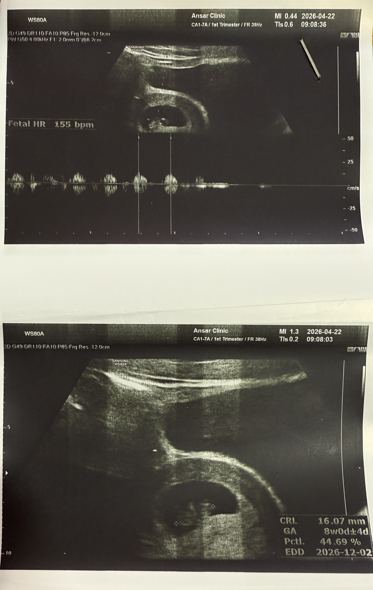
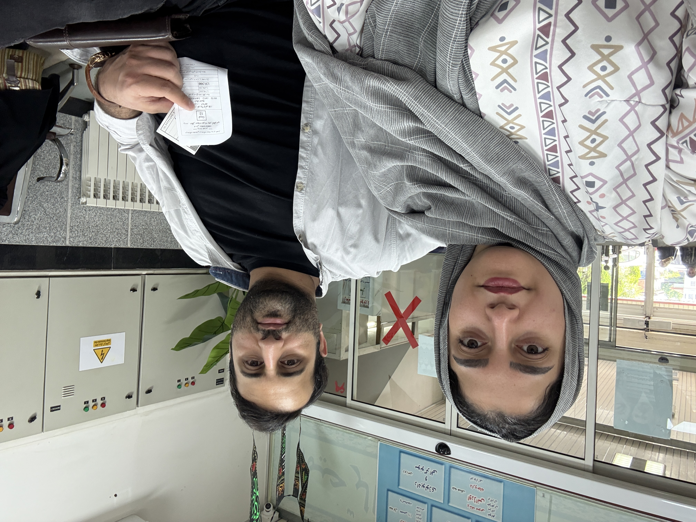

A MEMORY TO KEEP FOREVER
اولین صدای قلب تو
یک خاطره برای تمام عمر
اولین تصویر از تو
همان تصویری که برای اولین بار نگاهمان را به سمت تو برد.

لحظهای که کنار هم منتظر تو بودیم
عکس واقعی ما در روز سونوگرافی؛ ثبت یک صبح که دیگر هیچوقت فراموش نمیشود.

صدای اولین ضربان قلبت
این چند ثانیه، یکی از ارزشمندترین صداهایی است که تا همیشه برایمان میماند.
🎧 صدای اولین ضربان قلبت
ویدئوی اولین سونوگرافی
این ویدئو همان لحظهای را نگه میدارد که تصویر و صدای تو برایمان واقعیتر شد.
برای سازگاری بهتر با گوشیها و مرورگرها، نسخه MP4 با کُدک H.264 را کنار فایل MOV قرار بده.
«یک روز، سالها بعد، وقتی این صفحه را دوباره میبینی، یادت باشد که قبل از آنکه تو ما را بشناسی، ما عاشقانه منتظر آمدنت بودیم.»